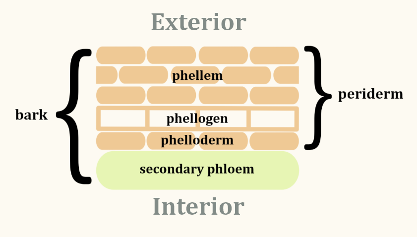

Overview
Bark serves two important functions in plants: protection and mechanical support. Some examples of protection include insulation from the heat and cold, prevention from desiccation, and diversion of insects and other pests.
Anatomy
The bark is made out of periderm and secondary phloem. In order of exterior to interior, the periderm consists of phellem, phellogen, and phelloderm.
Phellem
Also known as the cork. It is the outermost layer of
the periderm.
Phellogen
AKA cork cambium. Made up of hollow, cylindrical cells
located around the edge of the stem or root.
According to Simpson's Plant Systematics, this layer
undergoes tangential divisions to form phelloderm to the
inside and phellem to the outside.
Phelloderm
The innermost layer of the periderm. Found in stems more than roots.
Secondary Phloem
Simpson's Plant Systematics describes this as "sugar-conducting
tissue produced by the vascular cambium to the outside of a woody stem or root."